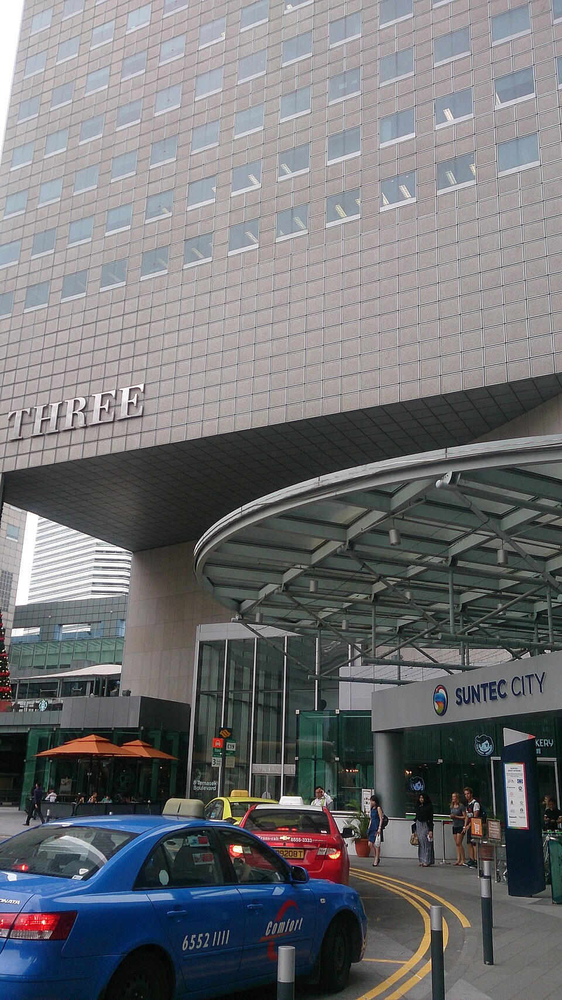

SUNTEC CITY TOWER 3
欢迎来到
用友新加坡
第一天，先找到办公室。到了以后，按这张清单慢慢来。
09:00首日报到
Suntec Tower 310 楼 · #10-03
随身带护照，手机准备好 Singpass
8 Temasek Boulevard, Suntec Tower 3,#10-03, Singapore 038988

LEVEL 10#10-03
TOWER 3
入职导览
从这里开始
按需要打开一项，现场照着做。
首日报到路线
按顺序完成四件事
APP 识别
友空间私有版
认准红色图标和右上角的「私有版」标识。可用手机号与短信验证码登录。
友空间用于打卡、请假、群组沟通、传输文件、查看共享文档和提交工单。
工作日签到09:00
工作日签退18:00
友空间私有版
日常打卡
遇到问题
- 确认友空间已获得定位权限。
- 在办公室检查是否接入员工 Wi‑Fi，并确认已切换到新加坡公司。
- 仍有问题时联系 HR。第一天账号还未开通时，请联系 HR 确认当天考勤如何登记。
补卡次数和时限以 HR 确认的现行规则为准。
请假
公司邮箱
请联系 HR 开通公司邮箱，并确认生效时间。
集团账号
如岗位需要集团账号，请联系 HR 确认开通方式
办公室网络
连接 Wi‑Fi
Windows 设置
添加打印机
展开 Windows 图文教程
使用 Mac 时，请联系办公室 IT 或行政取得适用设置。